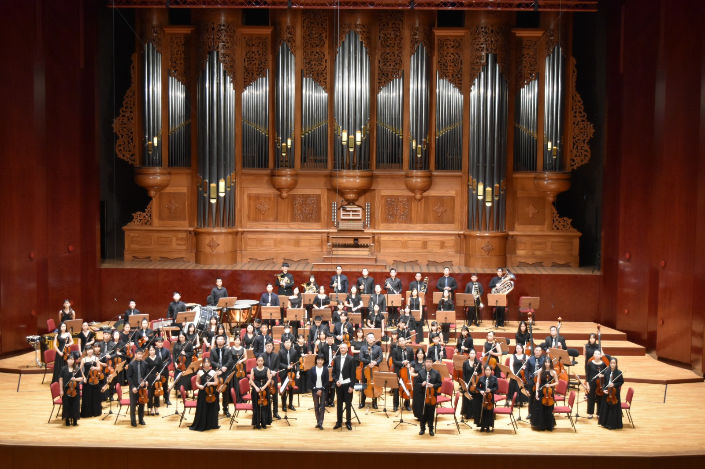

專業師資
由具備教學與演出經驗的師資群引導，重視基礎、音樂性與團隊默契。
藝享愛樂音樂教育推廣協會致力於推廣音樂教育，透過專業的師資、合奏訓練與舞台演出，陪伴孩子在音樂中學習、成長。我們相信，音樂不只是演奏技巧，更是一段陪伴孩子探索自我、建立自信與培養合作精神的人生旅程。
從日常練習到正式演出，陪伴學生一步一步累積舞台經驗。
由具備教學與演出經驗的師資群引導，重視基礎、音樂性與團隊默契。
透過分部與合奏訓練，讓學生在音樂中學會傾聽、配合與責任感。
定期舉辦成果發表與音樂會，讓每一次演出都成為成長的里程碑。
在溫暖支持的環境中學習音樂，讓孩子願意持續探索與表達。

正式上線後可放置招生公告、音樂會資訊與活動通知。
後續可加入各團招生時間、報名方式與聯絡資訊。
音樂會、成果發表與重要活動可集中放在這裡。
讓家長與學生快速看到近期活動照片與紀錄。


Contact
後續可在這裡放入地址、電話、Email、Facebook、YouTube 與 Google 地圖。